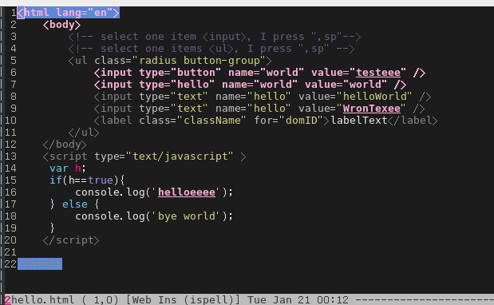
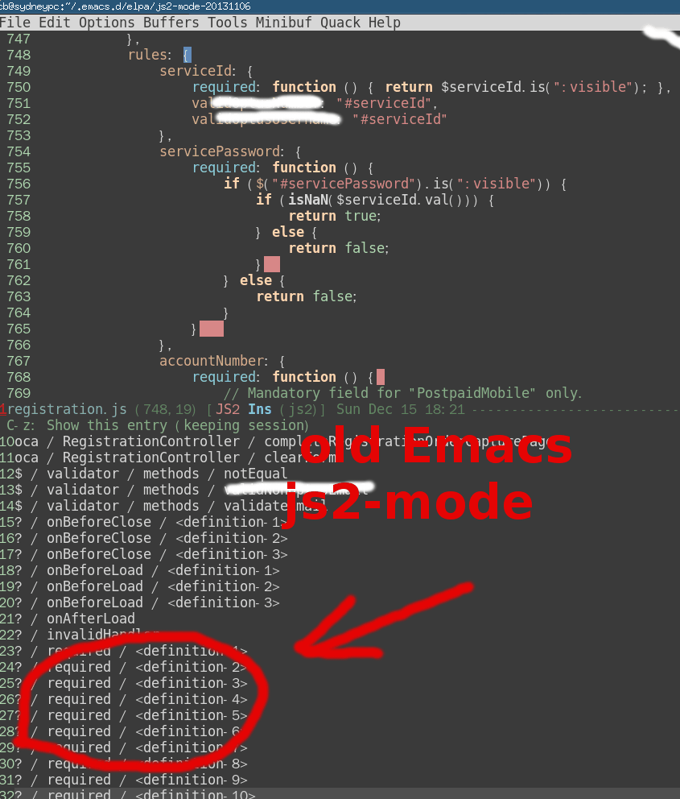
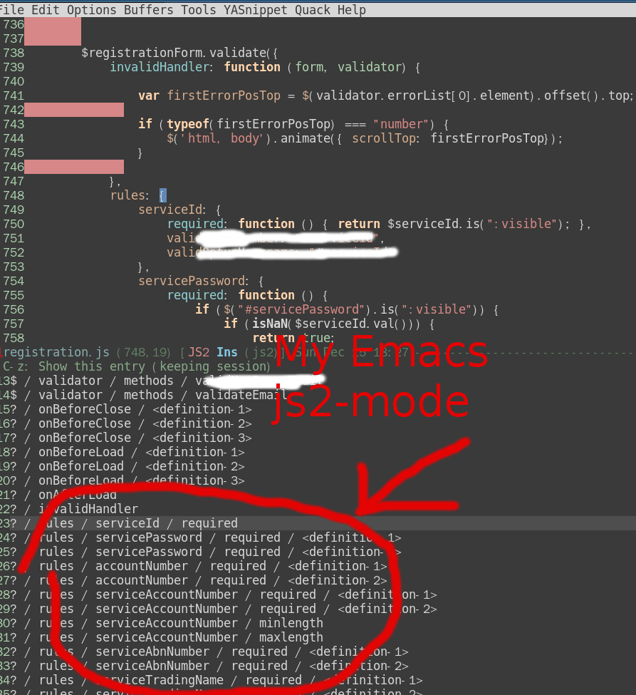
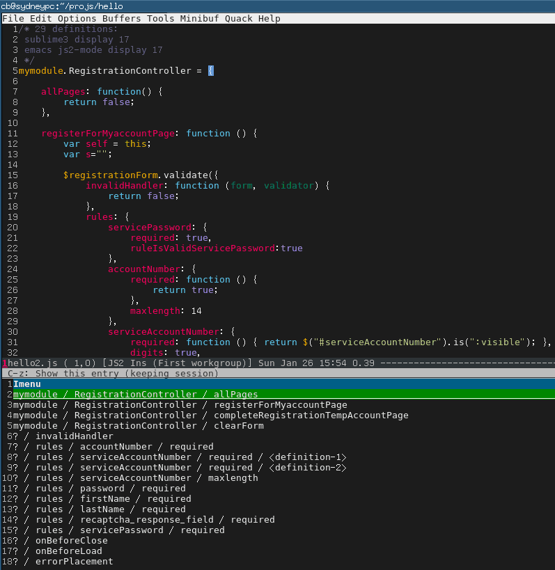

Notes on set up nfs on ArchLinux
Key points
- see Redhat documenation, best doc on exportfs
- Understanding Subnet mask and essential Subnet mask
- `sudo exportfs -r` to reload /etc/exports
- `sudo exportfs -v` to see current nfs exports
- content of /etc/exports:
/srv/nfs4/z 192.168.0.0/16(ro,insecure,no_subtree_check)
- check optimizatioin tips
- `man 5 exports` for the documentation of /etc/exports
- Debugging NFS File Access on Server and Client Side
# turn on the log sudo rpcdebug -m nfsd -s proc # turn off the log
- then `sudo tail -f /var/log/messages.log`
- Basically you need `sudo systemctl enable syslog-ng.service` to enable system log before you use rpcdebug
Summary
On server side:
sudo exportfs # got output like: # /srv/nfs4/z 192.168.0.0/16
Then on client side:
# 131072 is 128K sudo mount 192.168.1.9:/srv/nfs4/z ~/z -o rsize=131072,wsize=131072,noatime,nodiratime,intr
Git merge in command line
List and filter all the files need resolve conflict, then apply certain git operation on them:
git diff --name-only --diff-filter=U|grep "\.html\|\.min\.js"|xargs -I{} sh -c "git checkout --theirs {} && git add {}"
Switch input method in evil-mode (在Evil中快速切换输入法)
I need input Chinese (or any other language) in Emacs. The default key binding is C-\ to toggle input method.
Since I'm using evil-mode (Vim simulation), I need switch evil state from normal to insert before switching input method.
The extra keybindings could be optimized by below code in ~/.emacs:
(defun evil-toggle-input-method ()
"when toggle on input method, switch to evil-insert-state if possible.
when toggle off input method, switch to evil-normal-state if current state is evil-insert-state"
(interactive)
(if (not current-input-method)
(if (not (string= evil-state "insert"))
(evil-insert-state))
(if (string= evil-state "insert")
(evil-normal-state)))
(toggle-input-method))
(global-set-key (kbd "C-\\") 'evil-toggle-input-method)
BTW, I recommend the Chinese input method pyim written in pure elisp.
Emacs中切换其自带输入法的快捷键是=C-\=,对应的命令是=M-x toggle-input-method=.
我遇到的问题是如果使用Evil(一种Vim模拟)则切换输入法不方便.我需要先切换evil-state至insert,然后才能切换输入法.
只要将以上代码贴入=~/.emacs=,则切换输入法可以更加高效:
顺便提一下,pyim是强烈推荐的中文输入法.
Effective spell check in Emacs
CREATED:
UPDATED:
I use Flyspell in web-mode as sample. Other major modes also works.
At first, please turn on flyspell for all programming languages by inserting below code into .emacs,
(add-hook 'prog-mode-hook 'flyspell-prog-mode)
There is also a short tutorial on:
- How to setup flyspell
- Difference between hunspell and aspell
- How to setup hunspell
Spell check in HTML
I will spell check,
- Text between html tag like
<label>Please input email</label> - Value of html input control like
<input type"text" value="Please input your name">= - CSS class name like
<div class"btn btn-default" />=
My setup:
;; {{ flyspell setup for web-mode
(defun web-mode-flyspell-verify ()
(let* ((f (get-text-property (- (point) 1) 'face))
rlt)
(cond
;; Check the words with these font faces, possibly.
;; this *blacklist* will be tweaked in next condition
((not (memq f '(web-mode-html-attr-value-face
web-mode-html-tag-face
web-mode-html-attr-name-face
web-mode-constant-face
web-mode-doctype-face
web-mode-keyword-face
web-mode-comment-face ;; focus on get html label right
web-mode-function-name-face
web-mode-variable-name-face
web-mode-css-property-name-face
web-mode-css-selector-face
web-mode-css-color-face
web-mode-type-face
web-mode-block-control-face)))
(setq rlt t))
;; check attribute value under certain conditions
((memq f '(web-mode-html-attr-value-face))
(save-excursion
(search-backward-regexp "=['\"]" (line-beginning-position) t)
(backward-char)
(setq rlt (string-match "^\\(value\\|class\\|ng[A-Za-z0-9-]*\\)$"
(thing-at-point 'symbol)))))
;; finalize the blacklist
(t
(setq rlt nil)))
rlt))
(put 'web-mode 'flyspell-mode-predicate 'web-mode-flyspell-verify)
;; }}
I use web-mode for HTML files. The technique applies on other modes (php-mode, html-mode ….) .
Don't display doublon (double word) as error
Modern CSS frameworks like Bootstrap make doublon unavoidable. For example, CSS class name btn btn-default contains double word btn.
So we need stop displaying doublon as error in HTML,
(defvar flyspell-check-doublon t
"Check doublon (double word) when calling `flyspell-highlight-incorrect-region'.")
(make-variable-buffer-local 'flyspell-check-doublon)
(defadvice flyspell-highlight-incorrect-region (around flyspell-highlight-incorrect-region-hack activate)
(if (or flyspell-check-doublon (not (eq 'doublon (ad-get-arg 2))))
ad-do-it))
(defun web-mode-hook-setup ()
(flyspell-mode 1)
(setq flyspell-check-doublon nil))
(add-hook 'web-mode-hook 'web-mode-hook-setup)
Spell check camel case strings
We can check camel cased string/variable/function if and only if aspell is used.
Insert below code into .emacs,
;; if (aspell installed) { use aspell}
;; else if (hunspell installed) { use hunspell }
;; whatever spell checker I use, I always use English dictionary
;; I prefer use aspell because:
;; 1. aspell is older
;; 2. looks Kevin Atkinson still get some road map for aspell:
;; @see http://lists.gnu.org/archive/html/aspell-announce/2011-09/msg00000.html
(setq ispell-program-name "aspell"
;; force the English dictionary, support Camel Case spelling check (tested with aspell 0.6)
ispell-extra-args '("--sug-mode=ultra" "--lang=en_US" "--run-together")
Summary
EmacsWiki suggests (flyspell-prog-mode) which only checks typo in comments.
But as I proved, Emacs gives you full freedom to design a different solution.
Screen shot (typos are underscored):

Javascript and ReactJS setup (OPTIONAL)
If you fully understand my previous sections, you don't need read this section.
Insert below code into .emacs,
(defun js-flyspell-verify ()
(let* ((f (get-text-property (- (point) 1) 'face)))
;; *whitelist*
;; only words with following font face will be checked
(memq f '(js2-function-call
js2-function-param
js2-object-property
font-lock-variable-name-face
font-lock-string-face
font-lock-function-name-face))))
(put 'js2-mode 'flyspell-mode-predicate 'js-flyspell-verify)
(put 'rjsx-mode 'flyspell-mode-predicate 'js-flyspell-verify)
How to execute user program for System V init script
Memo for my self.
sudo ls -1 /etc/{rc,init}.d/|grep local
# then read the file either rc.local or local
Notes on Google Chrome's dev tool
- C-[ or C-] to switch panel
- C-S-J to toggle dev tools and focus Console panel, see command line reference
- C-S-I to toggle dev tools, then C-o to switch to Sources panel if needed
- C-S-C to open dev tools and focus on Elements panel
- See https://developers.google.com/chrome-developer-tools/docs/shortcuts for all hot keys
- See https://developers.google.com/chrome-developer-tools/docs/javascript-debugging
- Click here for test
| command in source panel | hotkey |
|---|---|
| Continue | C-\ |
| Toggle break point | C-B |
| Step over | C-' |
| Step into | C-; |
| Step out | S-C-; |
| Up call stack | C-, |
| Down call stack | C-. |
| Toggle console view | ESC |
| Goto line | C-G |
| Goto file | C-P |
| Jump to method | S-C-O |
- I don't use hotkey F1~F12 because my windows manager is different from most developers
- live editing does not work on Chromium 30.0.1599.114 Built on Ubuntu 13.04. Anyway, I don't need this functionality
- hotkeys of "Continue" button in Sources panel does not work on Chromium 30.0.1599.114 Built on Ubuntu 13.04.
- "Break on" inspected element is extremely useful
My grub2 configuration
Content of /etc/grub.d/11_windows,
#!/bin/sh -e
echo "# Adding Windows GRUB 2 menu"
cat << EOF
menuentry "Windows XP" {
savedefault
insmod chain
insmod ntfs
set root=(hd0,1)
chainloader +1
}
EOF
/etc/default/grub
# Copyright 1999-2013 Gentoo Foundation
# Distributed under the terms of the GNU General Public License v2
# $Header: /var/cvsroot/gentoo-x86/sys-boot/grub/files/grub.default-2,v 1.4 2013/09/21 18:10:55 floppym Exp $
#
# To populate all changes in this file you need to regenerate your
# grub configuration file afterwards:
# 'grub2-mkconfig -o /boot/grub/grub.cfg'
#
# See the grub info page for documentation on possible variables and
# their associated values.
GRUB_DISTRIBUTOR="Gentoo"
GRUB_DEFAULT=saved
GRUB_SAVEDEFAULT=true
GRUB_HIDDEN_TIMEOUT=0
GRUB_HIDDEN_TIMEOUT_QUIET=true
GRUB_TIMEOUT=10
# Append parameters to the linux kernel command line
GRUB_CMDLINE_LINUX="libata.dma=1"
# Append parameters to the linux kernel command line for non-recovery entries
#GRUB_CMDLINE_LINUX_DEFAULT=""
# Uncomment to disable graphical terminal (grub-pc only)
#GRUB_TERMINAL=console
# The resolution used on graphical terminal.
# Note that you can use only modes which your graphic card supports via VBE.
# You can see them in real GRUB with the command `vbeinfo'.
#GRUB_GFXMODE=640x480
# Path to theme spec txt file.
# The starfield is by default provided with use truetype.
# NOTE: when enabling custom theme, ensure you have required font/etc.
#GRUB_THEME="/boot/grub/themes/starfield/theme.txt"
# Background image used on graphical terminal.
# Can be in various bitmap formats.
#GRUB_BACKGROUND="/boot/grub/mybackground.png"
# Uncomment if you don't want GRUB to pass "root=UUID=xxx" parameter to kernel
#GRUB_DISABLE_LINUX_UUID=true
# Uncomment to disable generation of recovery mode menu entries
#GRUB_DISABLE_RECOVERY=true
Why Emacs is better editor - a case study for javascript developer
UPDATED:
Let's see an example in real life development.
Note
For people who does not get the key points of this article, here are the points:
- Emacs has an embedded javascript interpreter which I extend a little bit.
- Other editors just use external tools or regular expression to do the semantic analysis.
- The difference of above two is bigger than the difference between machine gun and spear.
Problem
I'm maintaining a big javascript file with thousands of lines of legacy code.
My most urgent issue is how to list all the functions in that javascript file and jump to the definition of specific function easily.
The modern enterprise application usually define the javascript function in some complex data structure. So most editors are not good at listing the functions.
To understand what "complex" means, let's check some code from real world application:
$(el.completeRegistrationForm).validate({
ignore: " :hidden",
rules : {
password : {
required : function () { return $(el.password).is(":visible"); }
},
accountNumber : {
required : function () {
return $(el.accountNumber).is(":visible");
},
digits : true
}
// ... I skipped next 200 lines which are similar to above lines
},
messages : {
password: {
required : "Please input a valid password"
},
accountNumber: {
required : "Please provide a valid account number",
digits : "Please enter only digits",
}
// ... I skipped next 200 lines which are similar to above lines
}
});
Most editors like Sublime Text 3 cannot display the javascript functions with meaningful context in this case. All you can see is only a bunch of functions with name "required".:

Solution
Emacs has a js2-mode which is basically a javascript interpreter written in lisp. It's created by Steve Yegge and now maintained by mooz.
Since js2-mode is a interpreter, basically it can do anything you want. The key point is to understand the Abstract Syntax Tree (AST) defined in js2-mode.
Here is my patch to make js2-mode display the list of functions with correct context:
commit 56ed89bf18a6b58fd4620056288ea2ab52bd4d77
Author: Chen Bin <chenbin.sh@gmail.com>
Date: Sun Dec 15 18:18:06 2013 +1100
more hint for orphan function
diff --git a/js2-imenu-extras.el b/js2-imenu-extras.el
index e8e15a5..17bf158 100644
--- a/js2-imenu-extras.el
+++ b/js2-imenu-extras.el
@@ -174,6 +174,39 @@ prefix any functions defined inside the IIFE with the module name."
(js2-imenu-record-module-pattern node)))
t))))
+(defun js2-imenu-get-parent-keyname-list (node)
+ "get the list of keys of parent of node
+for example, for javascript code, {rules:{ password {required: function(){}}}}
+the return will be '(rules password)."
+ (let ((rlt '())
+ (n node))
+ (while (setq n (js2-imenu-parent-prop-node n))
+ (add-to-list 'rlt (js2-prop-node-name (js2-object-prop-node-left n)))
+ )
+ rlt
+ )
+ )
+
+(defun js2-imenu-parent-prop-node (node)
+ "for javascript code: parent-key-name:{ required:function(){} }
+we need know the parent-key-name.
+ step1, 'required:function(){}' is the js2-object-prop-node
+ step2, '{ required:function(){} }' is the js2-object-node
+ step3, 'parent-key-name:{ required:function(){} }' is js2-object-prop-node
+"
+ (let (p2 p3)
+ ;; step 2
+ (setq p2 (js2-node-parent node))
+ ;; step 3
+ (when (and p2 (js2-object-node-p p2))
+ (setq p3 (js2-node-parent p2))
+ (if (and p3 (js2-object-prop-node-p p3))
+ p3
+ )
+ )
+ )
+ )
+
(defun js2-imenu-record-orphan-function (node)
"Record orphan function when it's the value of NODE.
NODE must be `js2-object-prop-node'."
@@ -181,10 +214,15 @@ NODE must be `js2-object-prop-node'."
(let ((fn-node (js2-object-prop-node-right node)))
(unless (and js2-imenu-function-map
(gethash fn-node js2-imenu-function-map))
- (let ((key-node (js2-object-prop-node-left node)))
- (js2-record-imenu-entry fn-node
- (list js2-imenu-other-functions-ns
- (js2-prop-node-name key-node))
+ (let ((key-node (js2-object-prop-node-left node))
+ (parent-prop-node (js2-imenu-parent-prop-node node))
+ mylist
+ )
+ (setq mylist (append (js2-imenu-get-parent-keyname-list node)
+ (list (js2-prop-node-name key-node))
+ ))
+ (add-to-list 'mylist js2-imenu-other-functions-ns)
+ (js2-record-imenu-entry fn-node mylist
(js2-node-abs-pos key-node)))))))
(defun js2-imenu-record-module-pattern (node)
I already submitted the patch to mooz so everyone will enjoy this feature in the future.
Here is the screen shot of emacs in old js2-mode, the UI is based on Imenu Mode and Helm: 
The screen shot after we applying the above patch: 
Summary
That's an example of beauty of Emacs.
It gives you freedom and power. You can base your work on the top geeks like Steve Yegge and mooz. Just a few lines of lisp code to kick ass.
Update
My patch is incorporated into js2-mode since version 20140114.
After installing js2-mode, you need paste one line setup into your ~/.emacs,
(js2-imenu-extras-mode)
The UI to display the candidate is from package Helm.
The Helm version should be 20140125.1101 or higher, you can install Helm from MELPA.
After installing Helm, you can use command M-x helm-imenu to show the list of functions to jump to. Here is the screen shot how I use imenu in my hello2.js:

UPDATE: I suggest using counsel-imenu from Counsel instead of Helm.
Why some systemd service on ArchLinux does not work
List failed services
sudo systemctl --failed
I can also use `sudo journalctl -b` to get the log message when booting all the services. But not very useful.
Find the root cause of failed service
sudo systemctl status service-name
Why my /usr/lib/systemd/system/network-wifi.service does not work
Here is the content of my wifi service
[Unit]
Description=Wireless networkd connectivity (wlan0)
Wants=network.target
Before=network.target
BindsTo=sys-subsystem-net-devices-wlan0.device
After=sys-subsystem-net-devices-wlan0.device
[Service]
Type=oneshot
RemainAfterExit=yes
#EnvironmentFile=/etc/conf.d/network-wireless@wlan0
ExecStart=/usr/bin/ip link set wlan0 up
ExecStart=/usr/bin/wpa_supplicant -B -i wlan0 -c /etc/wpa_supplicant/yang.conf
ExecStart=/usr/bin/dhcpcd wlan0
ExecStop=/usr/bin/ip addr flush dev wlan0
ExecStop=/usr/bin/ip link set dev wlan0 down
[Install]
WantedBy=multi-user.target
It's because netcfg.service blocks my network-wifi.service.
Solutin is simple:
sudo systemctl disable netcfg
How to start a service as specific user (mpd, for example)
This is the content of /usr/lib/systemd/system/mpd.service:
[Unit]
Description=Music Player Daemon
After=network.target sound.target
[Service]
ExecStart=/usr/bin/mpd --no-daemon /home/cb/.mpd/config
User=cb
[Install]
WantedBy=multi-user.target
蚝油生菜做法
- 菜谱
- 油炸蒜末,倒入蚝油(至少4大勺)搅拌,最后放入生菜(半颗),搅拌一下即可,可以最后放盐如果嫌不咸的话
- 生菜用开水烫过沥干,因为其容易出水
- 不要放糖,蚝油本身有甜味了
阿基师的做法
小叮嚀: 1.西生菜要集中加熱（顏色才可以保持鮮綠跟脆口） 2.可以利用香菇去蠔油腥味 2.1. 利用香菇去做燴的動作，讓一些物料巴在上頭 2.2. 不要加雞精粉跟糖，蠔油已經有甜度了。 2.3. 蠔油跟豬油一起拌會更香 做法: 1.去除香菇蒂頭，斜刀將香菇切片。 2.起鍋下1茶匙油，爆香香菇片，下蠔油拌炒〈炒過的蠔油有焦糖味在裡面， 味道會更香〉，加入自來高湯〈自來高湯的量，只要抓蠔油鹹度即可〉，小滾一會兒， 讓香菇的甜味煮出來。 3.調太白粉水〈粉1：水3〉，加入適量的太白粉水，加入少許香油，不需攪拌，熄火 〈澱粉會吃油，攪拌的話會膨脹變成一團糊〉。 4.在滾水鍋中加鹽，汆燙西生菜〈菜要最後汆燙〉，加入少許薑末〈薑汁也行，薑可提味，巴在葉片上會更好吃〉汆燙，撈起西生菜瀝乾水份〈因為西生菜很會出水， 一定要徹底瀝乾水份，否則會水水的〉。 5.將蠔油醬汁淋在西生菜上即可。
Screen shot: